Class 3.2 - R 数据可视化基础¶
1. ggplot2 包语法预览¶
ggplot2 这个包作图的基本理念是图层的叠加，我们可以通过添加不同的图层来构建出我们想要的图形：
- 我们来看一段典型的
ggplot2代码：
ggplot(data = data) +
geom_point(aes(x = X, y = Y, color = group)) +
geom_smooth(aes(x = X, y = Y), method = "lm") +
labs(x = "Height", y = "Weight", title = "Height vs Weight")
-
通过这段代码，大家可以看出来，
ggplot2的代码结构和我们之前接触的 R 代码风格是有些不同的：- 我们前几节接触到的 R 代码基本上是一行代码实现一个功能的
- 而
ggplot2的代码是通过多行代码来实现一个图形的构建的，这多行代码使用+连接在一起 - 每一个加号就代表一个图层的叠加，这些图层可以是数据层、几何层、统计层、坐标层、主题层等等
- 通过这种图层的叠加，我们可以非常灵活地构建出我们想要的图形，这也是
ggplot2的一个非常重要的特点
用 ggplot2 作图，基本上都遵循同样的流程：
- 用
ggplot()指定要使用的数据（也可以同时用aes()指定映射关系） - 添加
geom_*()图层，决定画什么类型的图 - 添加标签、颜色、主题、坐标轴等修饰
- 根据需要，添加统计变换的图层，比如
geom_smooth()趋势线
本次课我们使用 beer 数据来展示数据可视化的基本功能，并围绕这样一个商业问题来作图：啤酒的价格变化，会怎样影响销量？进口啤酒和国产啤酒的表现一样吗？
beer数据是美国芝加哥地区 Dominick's Finer Foods 连锁超市的啤酒周度销售数据（1991–1995 年）- 数据中的每一行代表"一家门店 × 一个品牌 × 一周"的销售记录，一共有 4033 行，涵盖 5 家门店、4 个啤酒品牌和 203 周
-
本节课最常用的几个变量是：
price：啤酒的价格（美元）qty：销量，也就是这家门店在这一周卖出的这个品牌啤酒的数量brand：啤酒的品牌imported：这个品牌是进口（imported）还是国产（domestic）start_of_week：这一周的起始日期（日期型数据）
-
我们首先调用一下本次课要用到的包，再加载一下
beer数据（beer.csv需要放在当前的工作目录下，回忆一下 2.2 节中关于工作目录的内容）：
library(tidyverse) # 包含了 ggplot2、dplyr、readr 等常用数据处理和可视化包
library(patchwork) # 包含了用于组合多个图形的功能：使用 `|` 来并列图形，使用 `/` 来换行图形
library(scales) # 包含了用于格式化坐标轴的功能
library(ggokabeito) # 包含了色盲友好的调色板，这是本课程的默认调色板
beer <- read_csv("beer.csv")
beer |> head()
| **store <dbl>** | **week <dbl>** | **brand <chr>** | **upc <dbl>** | **qty <dbl>** | **price <dbl>** | **sales_indicator <lgl>** | **city <chr>** | **price_tier <chr>** | **zone <dbl>** | **zip <dbl>** | **address <chr>** | **latitude <dbl>** | **longtitude <dbl>** | **start_of_week <date>** | **is_holiday_week <lgl>** | **imported <chr>** |
|-----------------|----------------|-----------------|---------------|---------------|-----------------|---------------------------|----------------|----------------------|----------------|---------------|-------------------|--------------------|----------------------|--------------------------|---------------------------|--------------------|
| 86 | 91 | Budweiser | 1820000016 | 23 | 3.49 | FALSE | Chicago | medium | 2 | 60618 | 3350 Western Ave | 41.94235 | -87.68999 | 1991-06-06 | FALSE | domestic |
| 86 | 91 | Corona | 8066095605 | 13 | 5.79 | FALSE | Chicago | medium | 2 | 60618 | 3350 Western Ave | 41.94235 | -87.68999 | 1991-06-06 | FALSE | imported |
| 86 | 91 | Lowenbrau | 3410021505 | 13 | 3.99 | FALSE | Chicago | medium | 2 | 60618 | 3350 Western Ave | 41.94235 | -87.68999 | 1991-06-06 | FALSE | imported |
| 86 | 91 | Miller | 3410000554 | 15 | 3.69 | FALSE | Chicago | medium | 2 | 60618 | 3350 Western Ave | 41.94235 | -87.68999 | 1991-06-06 | FALSE | domestic |
| 86 | 92 | Budweiser | 1820000016 | 46 | 3.49 | FALSE | Chicago | medium | 2 | 60618 | 3350 Western Ave | 41.94235 | -87.68999 | 1991-06-13 | FALSE | domestic |
| 86 | 92 | Corona | 8066095605 | 24 | 5.79 | FALSE | Chicago | medium | 2 | 60618 | 3350 Western Ave | 41.94235 | -87.68999 | 1991-06-13 | FALSE | imported |
这个数据框有 17 列，直接打印出来会很宽，我们可以用 glimpse() 函数来更方便地查看每一列的类型和前几个值：
glimpse(beer)
Rows: 4,033
Columns: 17
$ store <dbl> 86, 86, 86, 86, 86, 86, 86, 86, 86, 86, 86, 86, 86, 86, 86, 86, 86, 86, 86…
$ week <dbl> 91, 91, 91, 91, 92, 92, 92, 92, 93, 93, 93, 93, 94, 94, 94, 94, 95, 95, 95…
$ brand <chr> "Budweiser", "Corona", "Lowenbrau", "Miller", "Budweiser", "Corona", "Lowe…
$ upc <dbl> 1820000016, 8066095605, 3410021505, 3410000554, 1820000016, 8066095605, 34…
$ qty <dbl> 23, 13, 13, 15, 46, 24, 21, 117, 47, 23, 34, 118, 46, 36, 48, 28, 39, 15, …
$ price <dbl> 3.49, 5.79, 3.99, 3.69, 3.49, 5.79, 3.99, 2.99, 3.49, 4.39, 3.49, 2.99, 3.…
$ sales_indicator <lgl> FALSE, FALSE, FALSE, FALSE, FALSE, FALSE, FALSE, FALSE, FALSE, FALSE, FALS…
$ city <chr> "Chicago", "Chicago", "Chicago", "Chicago", "Chicago", "Chicago", "Chicago…
$ price_tier <chr> "medium", "medium", "medium", "medium", "medium", "medium", "medium", "med…
$ zone <dbl> 2, 2, 2, 2, 2, 2, 2, 2, 2, 2, 2, 2, 2, 2, 2, 2, 2, 2, 2, 2, 2, 2, 2, 2, 2,…
$ zip <dbl> 60618, 60618, 60618, 60618, 60618, 60618, 60618, 60618, 60618, 60618, 6061…
$ address <chr> "3350 Western Ave", "3350 Western Ave", "3350 Western Ave", "3350 Western …
$ latitude <dbl> 41.94235, 41.94235, 41.94235, 41.94235, 41.94235, 41.94235, 41.94235, 41.9…
$ longtitude <dbl> -87.68999, -87.68999, -87.68999, -87.68999, -87.68999, -87.68999, -87.6899…
$ start_of_week <date> 1991-06-06, 1991-06-06, 1991-06-06, 1991-06-06, 1991-06-13, 1991-06-13, 1…
$ is_holiday_week <lgl> FALSE, FALSE, FALSE, FALSE, FALSE, FALSE, FALSE, FALSE, FALSE, FALSE, FALS…
$ imported <chr> "domestic", "imported", "imported", "domestic", "domestic", "imported", "i…
我们先使用 ggplot2 包中的 ggplot 函数，将 beer 数据传入，看下效果：
ggplot(beer)
- 运行这段代码后，我们会得到一个空白的图形，那是因为
ggplot(beer)这一行代码只创建了第一个图层，也就是数据层 - 但是我们还没有添加任何几何层来展示数据的结构和特征，所以我们看到的只是一个空白的图形
- 接下来，我们就在这个基础上添加一些几何层来展示数据的结构和特征了
2. ggplot2 包绘制常见图形类型¶
(1) 绘制箱形图 (Boxplot)¶
首先，我们来绘制第一个图形，就是箱形图
- 我们想使用箱形图来展示价格分布，就可以在
ggplot(beer)的基础上再加一个geom_boxplot图层：
ggplot(beer) +
geom_boxplot(aes(y = price))
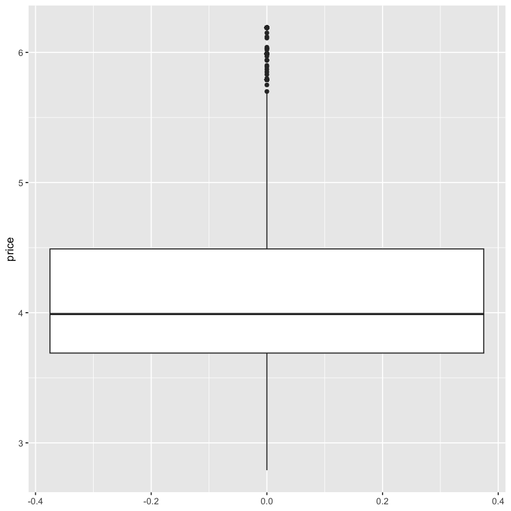
-
在这段代码中：
ggplot(beer)创建了数据层，告诉ggplot2我们要使用beer数据来绘图geom_boxplot(aes(y = price))添加了一个箱形图的几何层，告诉ggplot2我们要绘制价格的箱形图aes函数用来指定映射关系，在这里我们把价格映射到 y 轴上，这样我们就可以看到价格的分布情况了
-
注意，这里我们不用使用
beer$price来指定价格列，因为在ggplot2中，数据已经被传入了，所以我们直接使用列名就可以了
接下来，我们来加入一个维度，分别展示进口和非进口啤酒的价格分布：
ggplot(beer) +
geom_boxplot(aes(y = price, x = imported))
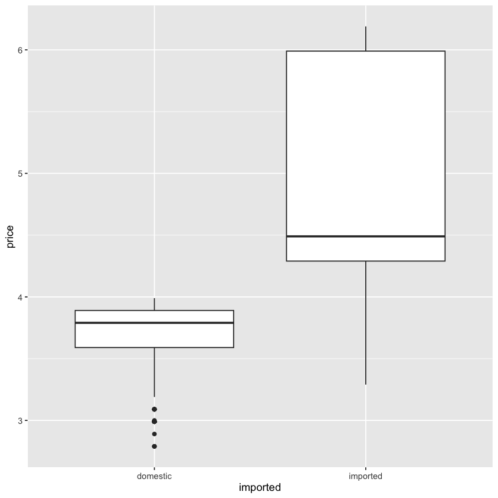
- 这里我们在
aes函数中加入了x = imported，这样我们就可以通过 x 轴来区分进口和非进口啤酒的价格分布了 - 运行这段代码后，我们就可以看到两个箱形图，一个是进口啤酒的价格分布，另一个是非进口啤酒的价格分布了
- 从图中我们可以读出：进口啤酒的价格中位数（约 4.49 美元）明显高于国产啤酒（约 3.79 美元），而且进口啤酒价格的波动范围（箱体的高度）也大得多，国产啤酒的价格则集中在比较窄的区间内，并且有一些价格偏低的异常值
这里我们可以看出来，aes 函数中：
y参数指定了图像的 y 轴数据怎样延伸，这里我们把价格填入到 y 轴上，这样我们就可以看到价格的分布情况了x参数指定了图像的 x 轴怎样延伸，这里我们是通过imported这个变量来区分进口和非进口啤酒的价格分布的- 通过这种方式，我们就可以非常灵活地控制图像的结构和特征了
- 我们不妨试试把
y和x参数交换一下位置，看看会发生什么：
ggplot(beer) +
geom_boxplot(aes(y = imported, x = price))
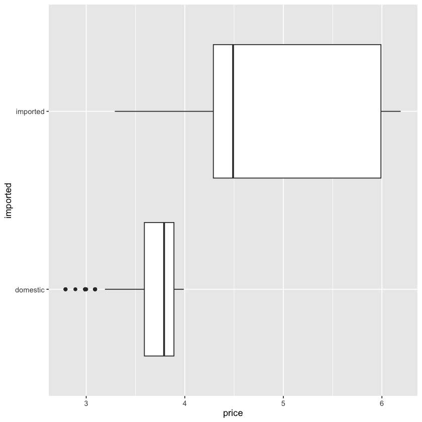
- 可以看到，这个时候就会变成一个横向的箱形图了
- 因此，
aes函数中的x就决定了图像的 x 轴数据怎样延伸，y就决定了图像的 y 轴数据怎样延伸，通过交换它们的位置，我们就可以得到不同方向的箱形图了
我们再来看一个例子，我们展示不同品牌啤酒的价格分布：
ggplot(beer) +
geom_boxplot(aes(y = price, x = brand))
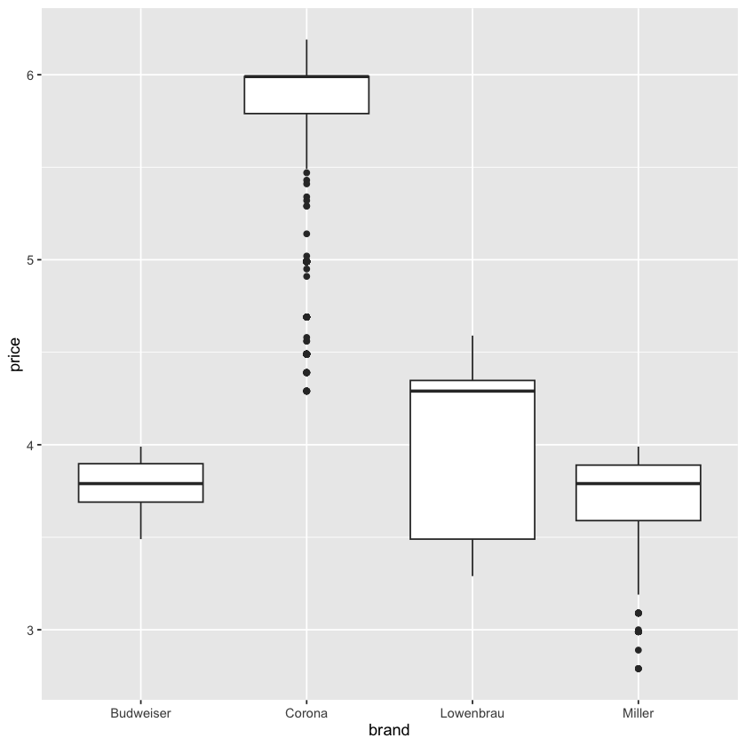
箱形图的解读：
-
箱形图中要素的含义：
- 箱体上界：第三个四分位数（Q3: 75%分位数）
- 箱体中线：中位数（Q2: 50%分位数）
- 箱体下界：第一个四分位数（Q1: 25%分位数）
- 上须线：上界 + 1.5 * 四分位距（IQR: Q3 - Q1）范围内的最大值：根据数据动态调整
- 下须线：下界 - 1.5 * 四分位距（IQR: Q3 - Q1）范围内的最小值：根据数据动态调整
- 箱体之外的点：异常值（outliers）
-
例如，我们有这样一组排好序的数据：
20, 55, 58, 60, 62, 65, 68, 70, 72, 90- Q3 = 69 = (68 + 70) / 2：10 个数中第 75% 的位置就是第 10 * 75% = 7.5 个数的位置，也就是第 7 个数和第 8 个数的平均值了，所以 Q3 就是 (68 + 70) / 2 = 69
- Q2 = 63.5 = (62 + 65) / 2：10 个数中第 50% 的位置就是第 10 * 50% = 5 个数的位置，也就是第 5 个数和第 6 个数的平均值了，所以 Q2 就是 (62 + 65) / 2 = 63.5
- Q1 = 57.5 = (55 + 58) / 2：10 个数中第 25% 的位置就是第 10 * 25% = 2.5 个数的位置，也就是第 2 个数和第 3 个数的平均值了，所以 Q1 就是 (55 + 58) / 2 = 57.5
- IQR = Q3 - Q1 = 69 - 57.5 = 11.5
- 上须线的范围：Q3 + 1.5 * IQR = 69 + 1.5 * 11.5 = 86.25：但是数据中没有86.25，因此就往下找，找到的第一个小于86.25的数是72，所以上须线的范围就是72了
- 下须线的范围：Q1 - 1.5 * IQR = 57.5 - 1.5 * 11.5 = 40.25：但是数据中没有40.25，因此就往上找，找到的第一个大于40.25的数是55，所以下须线的范围就是55了
- 因此，异常值有两个：20和90，因为它们分别小于下须线的范围55和大于上须线的范围72了
- 注意：以上是用"位置法"手算分位数的过程，R 在画箱形图的时候使用的分位数算法略有不同（用
quantile()函数算出来的是 Q1 = 58.5，Q3 = 69.5，IQR = 11），但是在这个例子中，最终得到的须线范围和异常值是一样的，大家理解箱形图的原理就可以了
-
根据箱形图，我们可以大致看出数据的分布情况：
- 如果下须线比上须线长，且箱体中位数更靠近箱体上方，那么数据可能是左偏的（Negatively skewed），也就是数据的长尾在较小值的一侧
- 如果上须线比下须线长，且箱体中位数更靠近箱体下方，那么数据可能是右偏的（Positively skewed），也就是数据的长尾在较大值的一侧
- 如果上下须线长度差不多，且箱体中位数在箱体中间，那么数据可能是对称分布的（Symmetric）
(2) 绘制直方图 (Histogram)¶
直方图展示的是数据的分布情况，使用的函数是 geom_histogram：
- 例如，我们想展示销量的分布情况，其中可以使用
aes(x = qty)来指定销量列作为 x 轴数据 aes函数基本不需要指定 y 轴数据，因为直方图的 y 轴默认就是频数（也就是每个箱子中有多少个观测），所以我们只需要指定 x 轴数据就可以了
ggplot(beer) +
geom_histogram(aes(x = qty))
- 从图中可以看出，销量的分布是右偏的：大多数门店在大多数周的销量都比较低，只有少数几周的销量特别高，形成了一条很长的右侧长尾
在 geom_histogram 函数中，我们可以使用两种方式来控制直方图的显示效果：
bins参数：这个参数用来指定直方图的箱数，也就是我们把数据分成多少个区间来展示，默认是 30 个箱子-
binwidth参数：这个参数用来指定每个箱子的宽度，也就是我们把数据分成多宽的区间来展示，默认是根据数据的范围和箱数自动计算的 -
我们来对比一下这两种方式的效果：
ggplot(beer) +
geom_histogram(aes(x = qty), bins = 20)
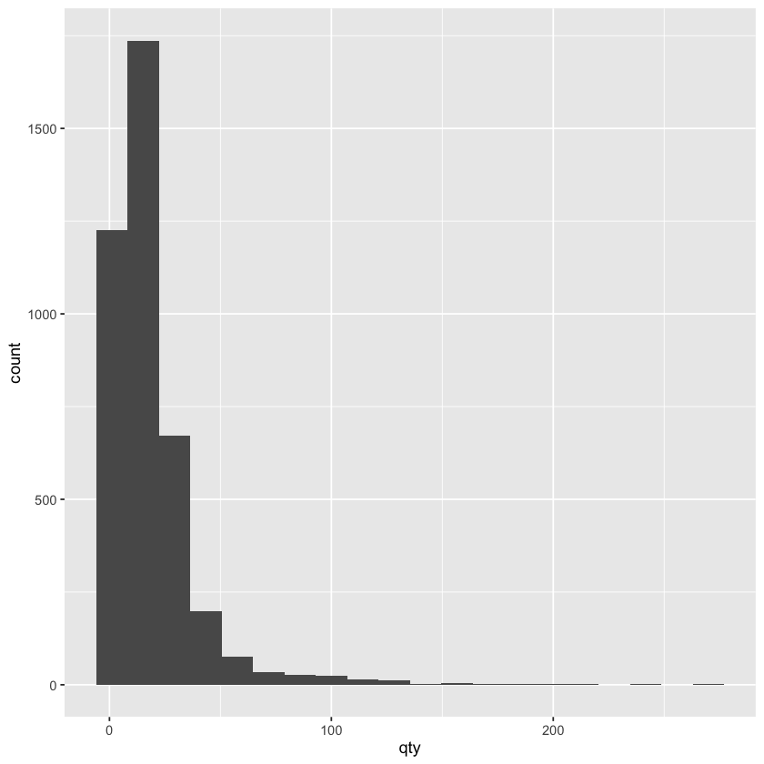
ggplot(beer) +
geom_histogram(aes(x = qty), binwidth = 10)
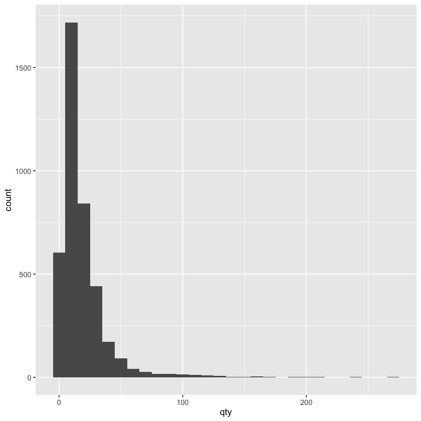
除了指定箱数和箱宽之外，我们还可以通过 fill 参数来指定是否按照某列来将箱体改为堆叠式箱体：
- 例如，我们可以使用
aes(fill = imported)来指定按照进口和非进口啤酒来区分不同颜色的箱体，注意fill参数是aes函数中的一个参数 - 这样我们就可以看到进口和非进口啤酒的销量分布情况了
ggplot(beer) +
geom_histogram(aes(x = qty, fill = imported), binwidth = 10)
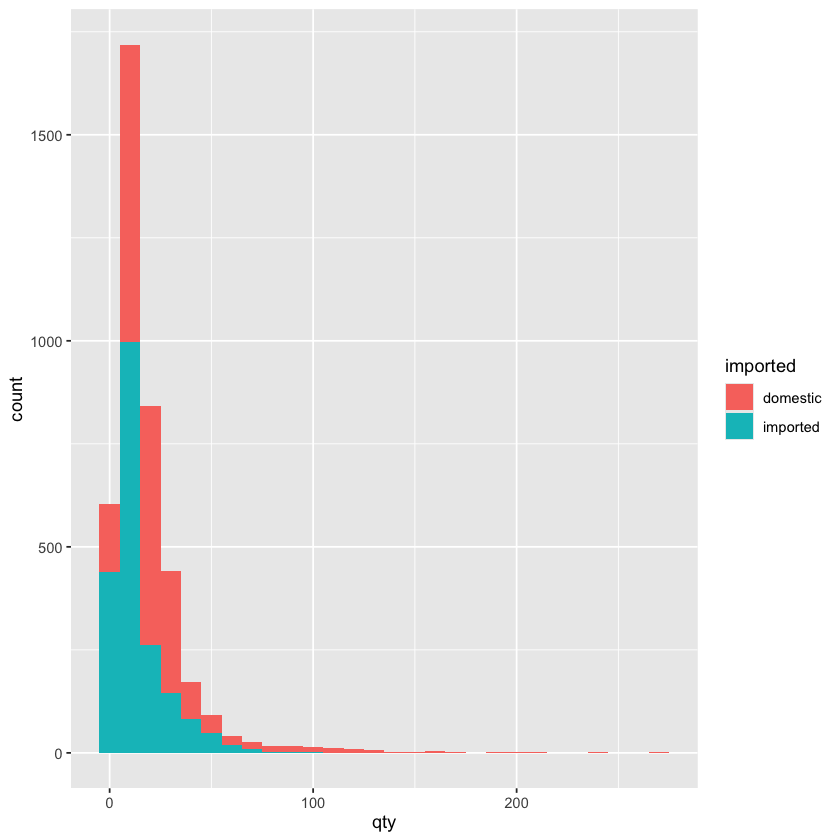
- 这个结果表示的含义是，每个箱体我们都分为两部分，一部分是进口啤酒的销量分布，另一部分是国产啤酒的销量分布
- 比方说销量在 10 左右的那个箱体，它下半部分的蓝绿色部分表示这个区间内进口啤酒的频数，而上半部分的红色部分表示这个区间内国产啤酒的频数
- 这里的颜色是
ggplot2自动分配的：按照字母顺序，domestic在前，分到红色，imported在后，分到蓝绿色；堆叠的时候，排在前面的组堆在上方
(3) 绘制密度图 (Density Plot)¶
密度图可以理解为直方图的变体，它是将直方图有棱角的箱体变成了平滑的曲线，使用的函数是 geom_density：
ggplot(beer) +
geom_density(aes(x = qty))
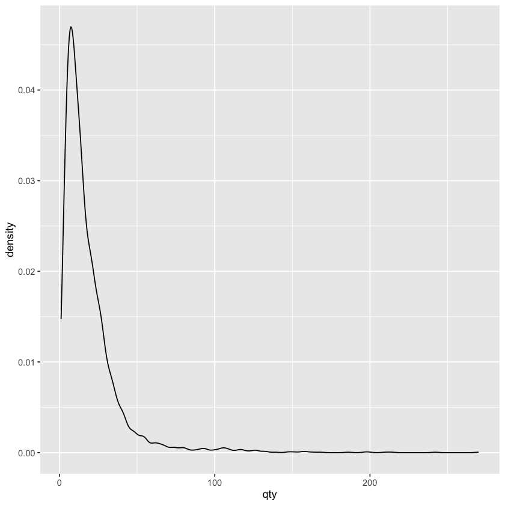
直方图和密度图都是展示数据分布的图形类型，区别在于：
- 直方图可以准确表示出每个区间内的频数，但是箱体不连续导致对数据分布的整体趋势不够直观
- 密度图则是通过平滑曲线来近似表示数据的分布情况，虽然会丢失一些细节东西，但这样表示更直观一些
- 密度曲线下方的面积总是等于 1，所以即使不同组的样本量不一样多，我们也可以直接比较它们分布的形状
当然，密度图也可以通过 aes(fill = imported) 来区分进口和非进口啤酒的密度曲线了，这样我们就可以看到不同类型啤酒的销量分布情况了
ggplot(beer) +
geom_density(aes(x = qty, fill = imported))
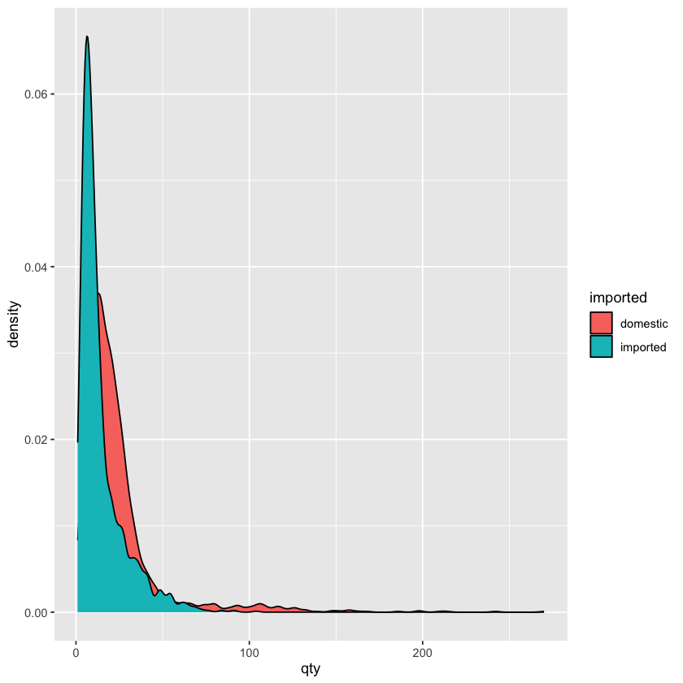
(4) 绘制散点图 (Scatter Plot)¶
散点图展示的是两个连续变量之间的关系，使用的函数是 geom_point：
- 在
geom_point函数中，我们可以使用aes(x = X, y = Y)，这时的x和y通常都是数值型的连续变量，这样我们才能在散点图中展示它们之间的关系了 - 除此之外我们还可以使用
color参数来指定按照某列来区分不同颜色的点，例如我们可以使用aes(color = imported)来指定按照进口和非进口啤酒来区分不同颜色的点了 -
这里我们简单区分一下
color和fill这两个参数：color参数用来指定点的边框颜色fill参数用来指定点的填充颜色- 这里我们使用
color而不使用fill是因为散点图中的点是没有填充颜色的，整个点全是边框
-
代码中的
scale_color_okabe_ito()是用来设置点的配色方案的，我们会在 3.3 节中详细介绍
ggplot(beer) +
geom_point(aes(y = price, x = qty, color = imported)) +
scale_color_okabe_ito()
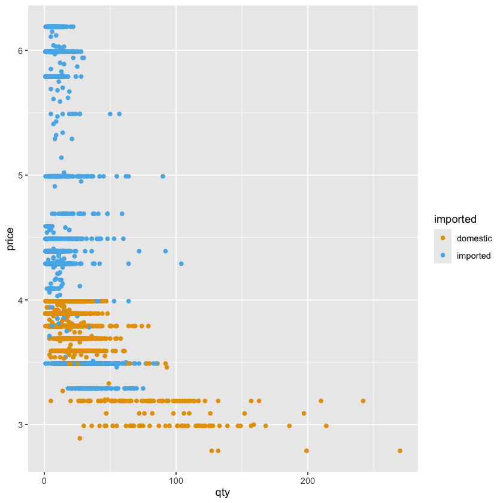
在散点图中，经常与散点一起绘制的还有平滑曲线，我们可以使用 geom_smooth 函数来添加平滑曲线：
- 首先，
geom_smooth中我们要使用aes(x = X, y = Y)来指定 x 轴和 y 轴的数据来源，这个基本上是与geom_point中的aes函数是一样的 -
接着，在
geom_smooth函数中，我们还可以添加以下参数：method参数：这个参数用来指定平滑曲线的拟合方法，常用的有 "lm"（线性模型）、"loess"（局部回归）等，默认值是 "auto"，表示数据量少于 1000 行时自动使用 "loess"，否则使用 "gam"（广义可加模型）se参数：这个参数用来指定是否显示平滑曲线的置信区间，默认是TRUE，表示显示置信区间，如果设置为FALSE，则不显示置信区间color参数：这个参数用来指定平滑曲线的颜色，下面代码中的palette_okabe_ito()[7]表示取 Okabe-Ito 调色板中的第 7 种颜色
ggplot(beer) +
geom_point(
aes(y = price, x = qty, color = imported),
alpha = 0.25
) +
geom_smooth(
aes(y = price, x = qty),
method = "lm",
color = palette_okabe_ito()[7],
se = TRUE
) +
geom_smooth(
aes(y = price, x = qty),
method = "loess",
color = palette_okabe_ito()[5],
se = TRUE
)

事实上，当我们的多个图层都要使用相同的 aes 映射时，我们可以把这个 aes 映射放在 ggplot 函数中，这样就不需要在每个图层中重复指定了：
ggplot(beer, aes(y = price, x = qty, color = imported)) +
geom_point(alpha = 0.25) +
geom_smooth(
method = "lm",
color = palette_okabe_ito()[7],
se = TRUE
) +
geom_smooth(
method = "loess",
color = palette_okabe_ito()[5],
se = TRUE
)
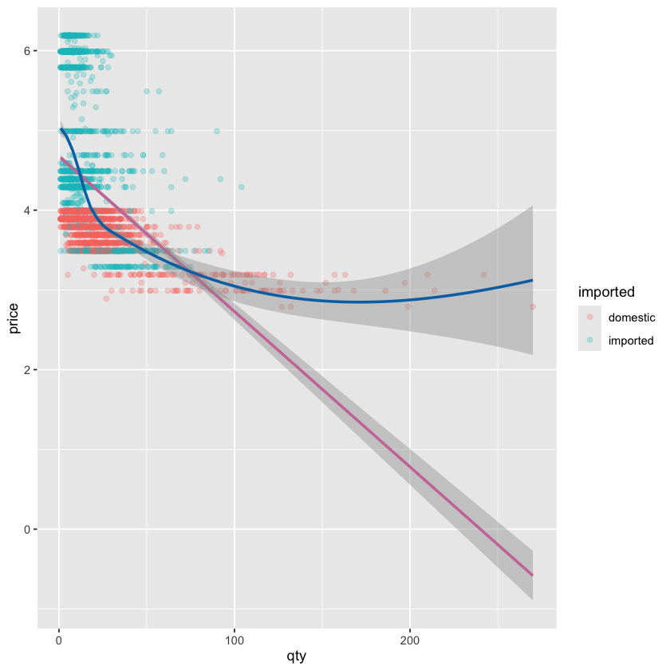
(5) 绘制柱状图 (Bar Plot)¶
在 ggplot2 中，柱状图的绘制要麻烦一点，因为我们要先准备用来绘制柱状图的数据：
-
例如，如果我们想绘制每个牌子的销量柱状图，我们就需要先对数据进行分组和汇总，得到每个牌子的总销量：
-
大家先简单知道以下代码在做什么就可以了，后面我们会在数据处理的章节中详细讲解这些代码的含义：
beer_summary <- beer |>
group_by(brand) |>
summarise(sum_qty = sum(qty))
beer_summary
| **brand <chr>** | **sum_qty <dbl>** |
|-----------------|-------------------|
| Budweiser | 16576 |
| Corona | 11117 |
| Lowenbrau | 17560 |
| Miller | 30998 |
- 之后，我们使用
ggplot(beer_summary)来创建数据层，以它为基准画柱状图，使用geom_bar函数：
ggplot(beer_summary) +
geom_bar(
aes(y = sum_qty, x = brand),
stat = "identity", # 表示使用原始数据的值而不是计数
fill = palette_okabe_ito()[2],
color = "black"
) +
scale_y_continuous(labels = scales::comma) +
labs(
x = "Brand",
y = "Total Quantity Sold"
) +
theme_bw()
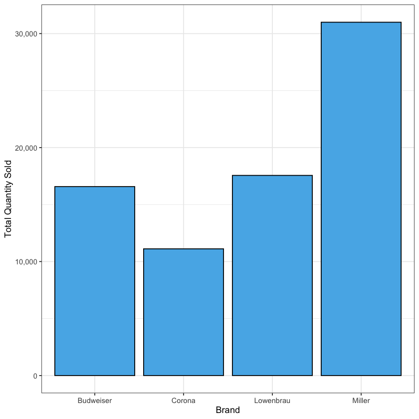
- 这里的
geom_bar(stat = "identity")也可以直接写成geom_col()，两者的效果是一样的，后面的课程中两种写法我们都会见到 - 如果我们不事先汇总数据，直接写
geom_bar(aes(x = brand))，geom_bar默认会自己去数每个品牌有多少行数据（stat = "count"），并把这个计数作为柱子的高度
在绘制柱状图的时候，如果想要按照某个顺序来排序柱子，也比较麻烦：
- 大家可以发现，现在默认的柱子排序是按照字典序的，也就是按照品牌名称的字母顺序来排序的
- 如果我们想按照销量的多少来排序柱子，我们就需要把品牌这一列改为因子类型
- 回顾我们之前介绍的因子类型数据，这种类型数据是可以指定顺序的，因此我们可以把品牌这一列改为因子类型，并且指定它的顺序：
# 使用 reorder() 函数将 brand 改为因子类型，并按照 sum_qty 的值进行降序排序
beer_summary <- beer_summary |>
mutate(brand = reorder(brand, -sum_qty))
- 之后我们再运行一遍之前的柱状图代码，我们就可以看到柱子已经按照销量的多少来排序了，销量最高的品牌在最左边，销量最低的品牌在最右边了：
ggplot(beer_summary) +
geom_bar(
aes(y = sum_qty, x = brand),
stat = "identity", # 表示使用原始数据的值而不是计数
fill = palette_okabe_ito()[2],
color = "black"
) +
scale_y_continuous(labels = scales::comma) +
labs(
x = "Brand",
y = "Total Quantity Sold"
) +
theme_bw()
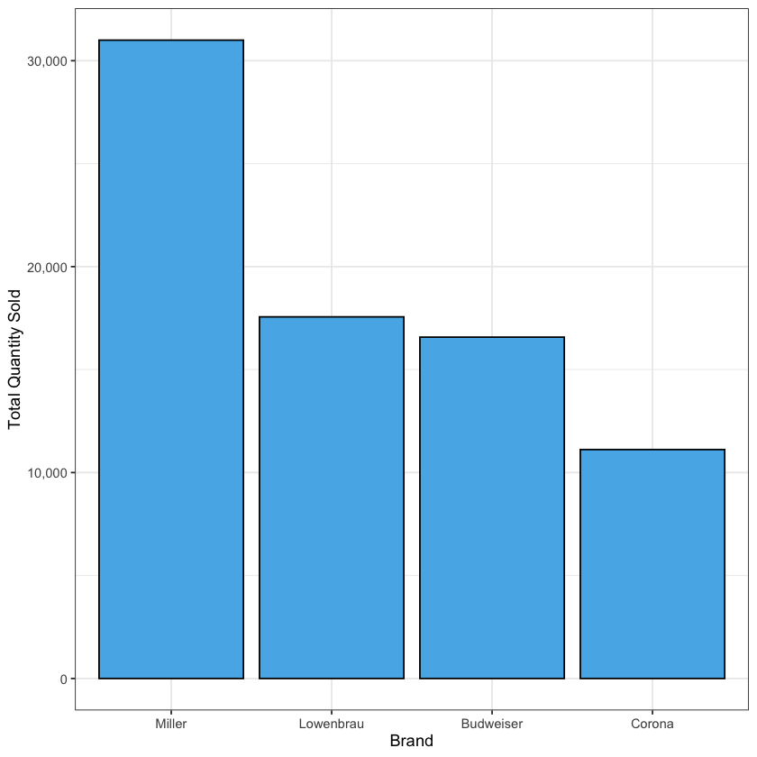
(6) 绘制折线图 (Line Plot)¶
折线图是展示数据随时间变化趋势的最常用的图形：
- 它的 x 轴通常是时间（比如日期），y 轴是我们关心的数值，相邻时间点之间用线段连接起来
beer数据中的start_of_week这一列就是每周的起始日期，它是我们在 2.4 节学过的日期型数据，非常适合用来做 x 轴- 和柱状图一样，折线图也需要先准备数据：我们想看的是全部门店每周的总销量，所以需要先按周汇总（大家同样先知道代码在做什么就可以了，后面的章节会详细讲解）：
beer_weekly <- beer |>
group_by(start_of_week) |>
summarise(sum_qty = sum(qty))
beer_weekly
| **start_of_week <date>** | **sum_qty <dbl>** |
|--------------------------|-------------------|
| 1991-06-06 | 437 |
| 1991-06-13 | 999 |
| 1991-06-20 | 1010 |
| 1991-06-27 | 587 |
| 1991-07-04 | 585 |
| ... | ... |
- 之后，我们使用
geom_line函数来绘制折线图，x 轴映射为日期，y 轴映射为每周总销量：
ggplot(beer_weekly) +
geom_line(
aes(x = start_of_week, y = sum_qty),
color = palette_okabe_ito()[2]
) +
scale_y_continuous(labels = scales::comma) +
labs(x = "Week", y = "Total Quantity Sold") +
theme_bw()
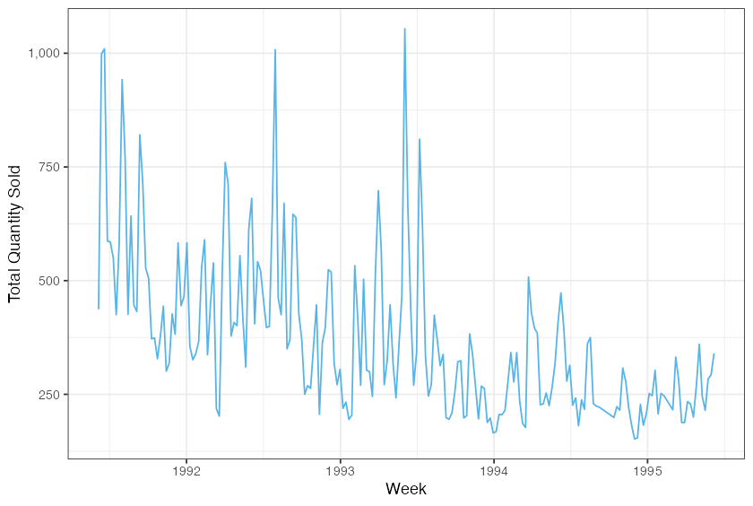
- 从这张图中我们可以看到，啤酒的周销量整体上呈现下降的趋势，并且中间有很多突然的高峰，这些信息是我们在数据表里很难一眼看出来的
geom_line会按照 x 轴的顺序，把相邻的点依次连起来，所以 x 轴需要是有先后顺序的变量，比如日期- 如果想调整线条的粗细，需要使用
linewidth参数，比如geom_line(linewidth = 1) - 这里 x 轴的刻度是 ggplot2 自动设置的，如何更精细地控制日期轴的刻度，我们会在时间序列数据的章节中讲解
如果想在同一张图中比较多个组的变化趋势，我们只需要把分组变量映射到颜色上，ggplot2 就会自动给每个组画一条线：
- 比如，我们想比较进口啤酒和国产啤酒每周销量的变化趋势，就需要先按周和是否进口汇总（其中的
.groups = "drop"这里先不用管）：
beer_weekly_imp <- beer |>
group_by(start_of_week, imported) |>
summarise(sum_qty = sum(qty), .groups = "drop")
beer_weekly_imp
| **start_of_week <date>** | **imported <chr>** | **sum_qty <dbl>** |
|--------------------------|--------------------|-------------------|
| 1991-06-06 | domestic | 317 |
| 1991-06-06 | imported | 120 |
| 1991-06-13 | domestic | 803 |
| 1991-06-13 | imported | 196 |
| 1991-06-20 | domestic | 624 |
| ... | ... | ... |
- 然后在
aes()中把imported映射到color：
ggplot(beer_weekly_imp) +
geom_line(aes(x = start_of_week, y = sum_qty, color = imported)) +
scale_color_okabe_ito() +
scale_y_continuous(labels = scales::comma) +
labs(x = "Week", y = "Total Quantity Sold", color = "Imported") +
theme_bw()
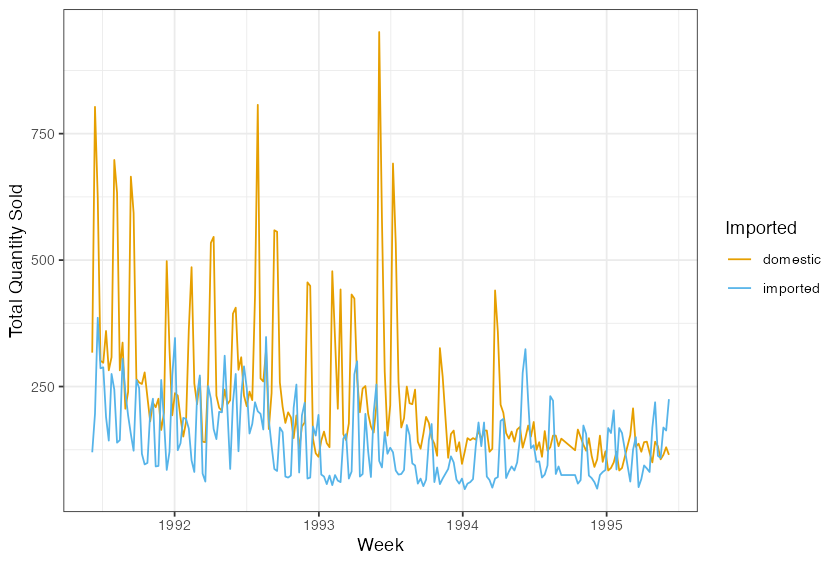
- 这张图中，两条线分别代表国产和进口啤酒，并且自动生成了图例
- 我们可以看到，国产啤酒的销量整体上高于进口啤酒，但是两者的差距在后期逐渐缩小，这就是折线图在比较不同组的趋势时的作用
3. 将图像赋值为对象¶
在 R 中，我们可以将整个图像构建的代码赋值为一个对象，这样我们就可以通过这个对象来展示图像了：
-
例如，我们将之前的箱式图的代码赋值为一个对象
plt -
注意，赋值操作并不会让图像立即展示出来，我们需要通过调用这个对象
plt来展示图像：
plt <- ggplot(beer) +
geom_boxplot(aes(y = price, x = brand, fill = brand)) +
scale_fill_okabe_ito()
plt
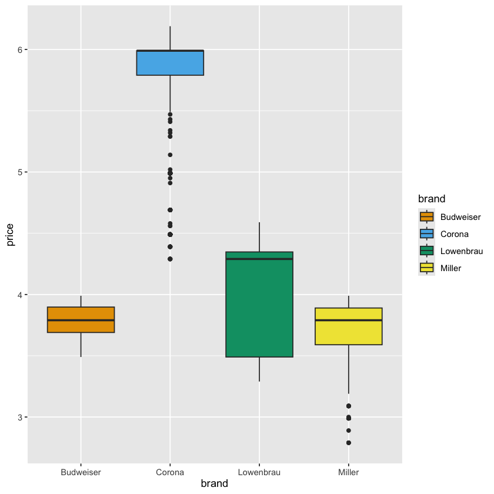
将图像赋值的最大好处就是可以将图像的构建和展示分开，这样我们就可以在构建图像的过程中进行一些调整和修改，而不需要每次都重新运行整个代码来展示图像了：
- 比方说，我们在
plt的基础上，先展示一个theme_bw()的版本：
plt + theme_bw()
- 然后我们再展示一个
theme_minimal()的版本：
plt + theme_minimal()
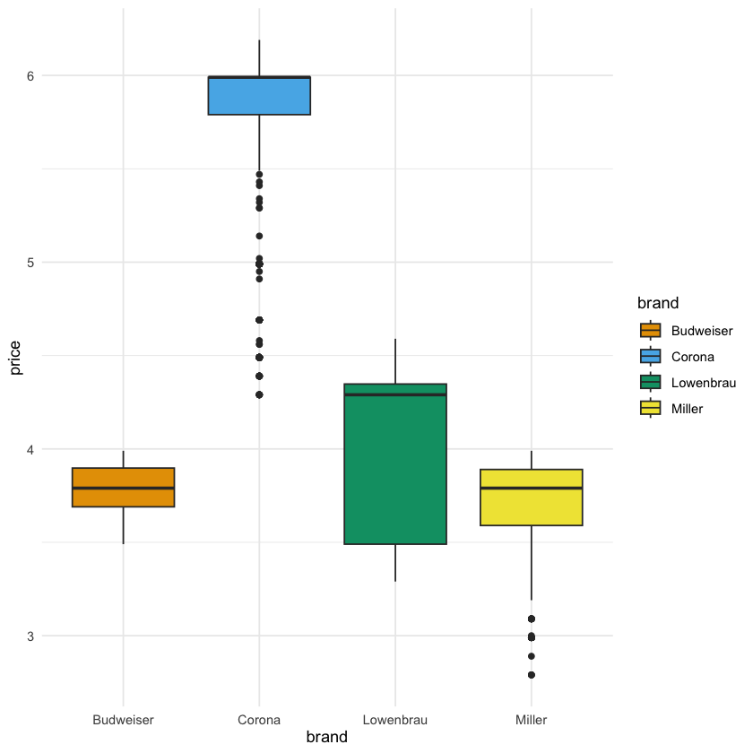
- 通过这种方式，我们就可以非常方便地在不同的主题之间切换了，而不需要每次都重新运行整个代码来展示图像了
如果想把图像保存成图片文件（比如放到报告或者幻灯片中），可以使用 ggsave() 函数：
ggsave("price_boxplot.png", plt, width = 6, height = 4)
- 第一个参数是文件名，文件的扩展名决定了保存的格式，比如
.png、.jpg、.pdf - 第二个参数是要保存的图像对象；如果不写，则保存最近一次展示的图像
width和height分别是图片的宽度和高度，默认单位是英寸- 图片会被保存在当前的工作目录下
4. R 中的分图¶
(1) 手动分图¶
在 R 中，我们可以将多个图形放在一个画布上展示，代码虽然有些复杂，但是逻辑比较简单：
- 首先，我们需要安装并加载
patchwork这个包，以下的图像组合符号都是patchwork包提供的功能 - 之后，我们只需将每个图像的代码，放入一个括号中，然后使用
|来连接这些括号中的代码块，就可以将这些图像放在同一行展示了 - 如果要换行，我们可以使用
/来换行 - 注意：
/的运算优先级比|高，所以每一行的图像都要先用括号括起来，再用/把各行连接起来，否则图像的排列就会和我们想的不一样 - 语法结构如下，以下展示了将6个图像分成2行3列的示例：
(
(图1代码) | (图2代码) | (图3代码)
) /
(
(图4代码) | (图5代码) | (图6代码)
)
事实上，手动分图不一定非要行列对齐，我们用 | 来表示并列，用 / 来表示换行，可以根据需要来调整图像的排列方式，例如第一行一张图，第二行两张图：
(图1代码) /
(
(图2代码) | (图3代码)
)
例如我们想将箱形图和散点图放在同一行展示，我们就可以这样写：
(
ggplot(beer) +
geom_point(aes(y = price, x = qty, color = imported)) +
scale_color_okabe_ito()
) |
(
ggplot(beer) +
geom_boxplot(aes(y = price, x = imported, fill = imported)) +
scale_fill_okabe_ito() +
theme(legend.position = "none")
)
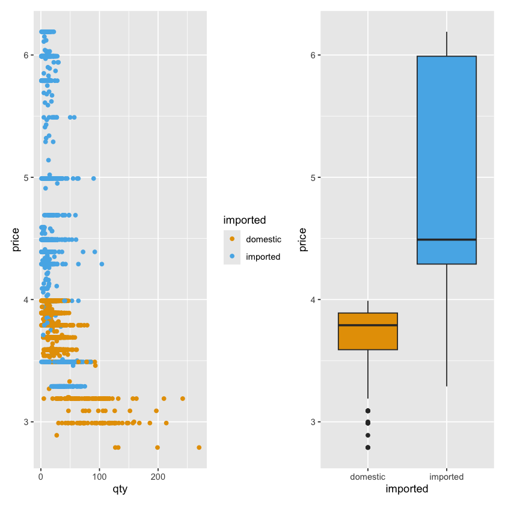
(2) 按要素分图¶
除此之外，我们还可以使用 facet_wrap 函数来按照某个要素来分图：
- 例如我们如果想按照进口和非进口啤酒来分图，我们就可以使用
facet_wrap(~ imported)来指定按照imported这个变量来分图了 - 运行这段代码后，我们就可以看到两个图像了，一个是进口啤酒的价格与销量的散点图，另一个是国产啤酒的价格与销量的散点图了
- 通过这种方式，我们就可以非常方便地按照某个要素来分图了，这也是
ggplot2的一个非常重要的功能之一
ggplot(beer) +
geom_point(aes(y = price, x = qty, color = imported)) +
facet_wrap(~ imported)
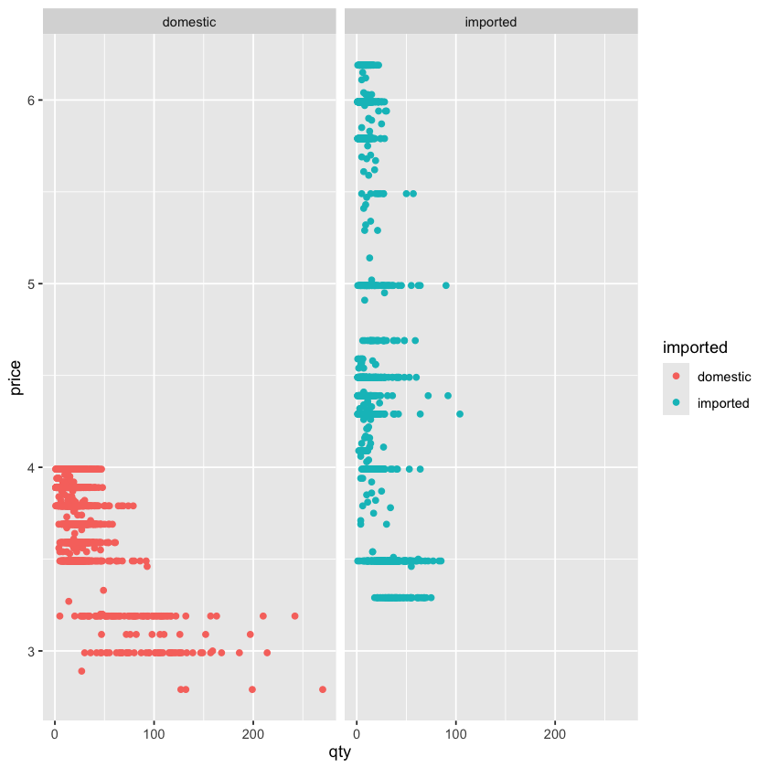